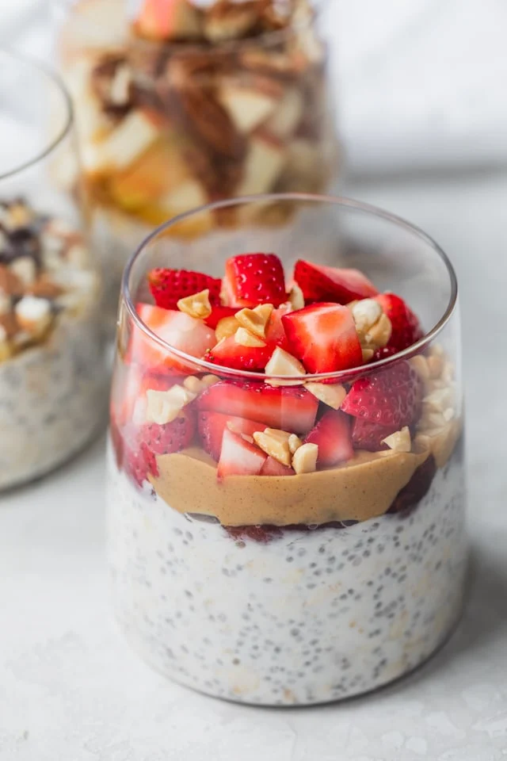

Sleepy Deepy Overnight Oats

Easy Overnight Oats Recipe
An easy meal-prep recipe that only takes 5 minutes to make and is super duper tasty and filling.
Use this recipe as a base and feel free to experiment a little bit and add toppings to your liking
Ingredients
Makes 1 serving
- 1/2 cup old fashioned rolled oats
- 1/2 cup milk of choice
- 1/4 cup yogurt of choice
- 1 tbsp chia seeds
- 1 tbsp honey or maple syrup
- 1/4 tsp vanilla extract
- toppings of choice such as nuts, nut butters, fruits, and cinnamon
Preperation
- Place all ingredients into a glass container or mason jar and mix until combined
- Cover the glass container with a lid or plastic wrap. Place in the refrigerator for at least 2 hours or overnight. Toppings can be added the night before or immediately before serving
- Uncover and enjoy from the glass container the next day. Thin with a little more milk or water, if desired